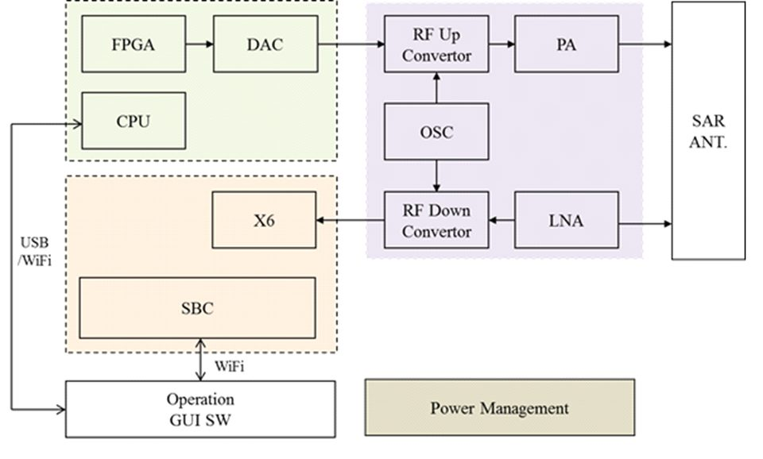

연구실적 · 국내전문학술지
30 cm급 완전편파 데이터 획득을 위한 소형 SAR 시스템 개발 및 신호처리
Development of Small SAR System and Signal Processing Algorithm for Full-Polarization Data Acquisition with 30 cm Resolution

초록
A small SAR system achieving 30 cm resolution is presented together with RAW-data-based Doppler parameter estimation and motion compensation algorithms. The system has two transmit and two receive channels, enabling multi-polarization (PolSAR) and interferometric (InSAR) data acquisition. Vehicle-mounted field tests demonstrate multi-polarization data collection and signal processing, and a motion compensation algorithm for residual phase errors caused by platform motion is shown to improve image performance.
인용
송정환, 정철호, 최종준, 김진수, 이우경, “30 cm급 완전편파 데이터 획득을 위한 소형 SAR 시스템 개발 및 신호처리”, 한국전자파학회논문지, 제29권 9호, 2018년 9월
BibTeX
@article{Song_2018,
title={Development of Small SAR System and Signal Processing Algorithm for Full-Polarization Data Acquisition with 30 cm Resolution},
volume={29},
ISSN={2288-226X},
url={http://dx.doi.org/10.5515/KJKIEES.2018.29.9.707},
DOI={10.5515/kjkiees.2018.29.9.707},
number={9},
journal={The Journal of Korean Institute of Electromagnetic Engineering and Science},
publisher={Korean Institute of Electromagnetic Engineering and Science},
author={Song, Jung-Hwan and Jung, Chul-Ho and Choi, Jong-Joon and Kim, Jin-Soo and Lee, Woo-Kyung},
year={2018},
month=Sept,
pages={707–721}
}